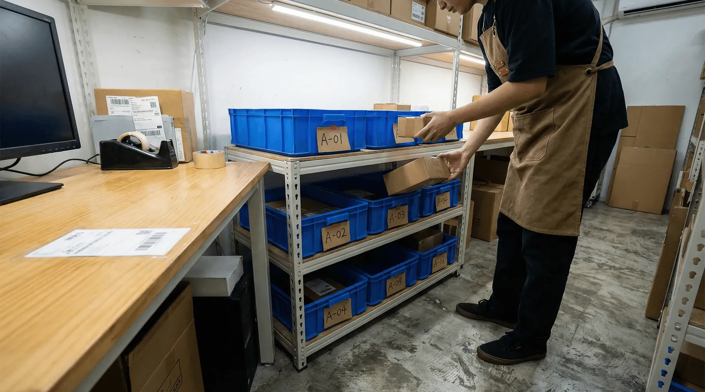

I har to slags lager, og de opfører sig ikke ens.
Det ene er råvarer og komponenter, som produktionen skal bruge. Det andet er færdige varer, som webshoppen skal sælge. De fleste systemer er bygget til det ene af dem.
Bliver de to holdt hver for sig i to systemer, opstår problemerne i mellemrummet: der hvor en vare holder op med at være en råvare og begynder at være en salgsvare.
I har i virkeligheden tre lagre
- Råvarer og komponenter. Bliver plukket til produktionen, ikke til en kunde. De skal aldrig kunne sælges i webshoppen.
- Halvfabrikata og mellemlagre. Varer der er færdige nok til at flytte, men ikke færdige nok til at sælge. Det er her flest varer forsvinder, fordi de står et sted som ingen har givet et navn.
- Færdigvarer på plukhylden. Først her må webshoppen regne med varen.
Springer man det midterste over, ser regnskabet fint ud, mens gulvet ikke gør.
👉 Har I produktion og webshop på samme adresse? Tal med SmartPack →
De fire steder det går galt
- Webshoppen sælger en råvare. Varen står på lager, men den er reserveret til næste uges produktion. Kunden får en ordrebekræftelse på noget der allerede er lovet væk.
- Produktionen plukker en færdigvare. Samme vare, to formål, ingen der siger fra.
- Varen tælles to gange. Den ligger som komponent i det ene system og som færdigvare i det andet, og summen af de to er større end det der står på gulvet.
- Ingen ved hvor den er lige nu. Den er hverken i produktionen eller på hylden. Den er på vej, og “på vej” er ikke en lokation.
Alle fire er det samme problem: varen flytter sig først, og informationen følger bagefter.
Sådan hænger det sammen hos Danfilter
Danfilter producerer filtre og driver webshoppen Filterhuset fra samme sted, med produktionen på den anden side af vejen. Henrik Friis beskriver kæden sådan:
“Vi kører vores fabrik, hvor vi plukker alle råvarer til produktionen via SmartPack. Vi producerer primært på den anden side af vejen, og så har vi intern logistik, der skal flytte varen rundt på interne mellemlagre, til det ligger på hylderne her bag mig, hvor det er klar til at plukke i vores webshop. Vi bruger SmartPack til hele processen, sådan at vi ved præcis hvor varen er.”
Henrik Friis, direktør og ejer af Danfilter, i videoen på deres case-side
Inden da så det anderledes ud. Hans egne ord om udgangspunktet: “Vi havde også store udfordringer i vores produktion med at finde de rigtige råvarer.”
Pointen er ikke at produktionen blev hurtigere. Pointen er, at der kun er ét sted at kigge, uanset om varen er råvare, halvfabrikata eller salgsvare.
Interne ordrer er også ordrer
Når produktionen henter råvarer, er det et pluk. Når intern logistik flytter noget fra mellemlager til plukhylde, er det en flytning der skal registreres. Begge dele er arbejde, og begge dele skal kunne måles.
Det har to konsekvenser, og den ene er en udgift:
- I får et sandt billede af hvad lageret faktisk laver. Kroner pr. ordre bliver forkert, hvis produktionens pluk ikke er med i nævneren.
- Interne ordrer og produktionsordrer tæller med i den mængde SmartPack afregner efter. Et lager med produktion har flere bevægelser end et rent webshoplager, og det skal med i regnestykket, når I sammenligner priser.
Det siger vi højt, fordi det er den slags man ellers opdager på den første faktura.
Hvad systemet skal kunne
- Skelne mellem hvad der kan sælges og hvad der kun kan bruges. Ellers sælger webshoppen jeres råvarer.
- Have lokationer for mellemtilstande. Et mellemlager er et rigtigt sted, ikke en periode.
- Registrere flytninger på terminalen. To meter eller to hundrede, det er den samme regel.
- Håndtere batch- og lotnumre hele vejen. Kommer der en reklamation på en færdigvare, skal I kunne finde partiet af den råvare den er lavet af.
- Køre B2B og webshop side om side. Producerer man selv, sælger man som regel også til forhandlere, og de to ordretyper skal ikke i samme kø.
Hvad SmartPack gør ved det
- Produktionens råvarepluk kører som en plukproces på linje med webshoppens
- Interne mellemlagre er rigtige lokationer, så en vare aldrig er “på vej” uden adresse
- Flytninger meldes på håndterminalen, så beholdning og lokation følger varen
- Batch- og lotnumre følger med fra råvare til færdigvare
- Plukprofiler holder produktionsordrer, B2B-ordrer og webshopordrer i hver sin kø
Se også hvordan batch- og lotnumre virker og hvordan en flytning registreres.
- Danfilter: fabrik, intern logistik, webshop og B2B i samme system
- Uniq Perler: 9.000 varenumre på 200 kvadratmeter